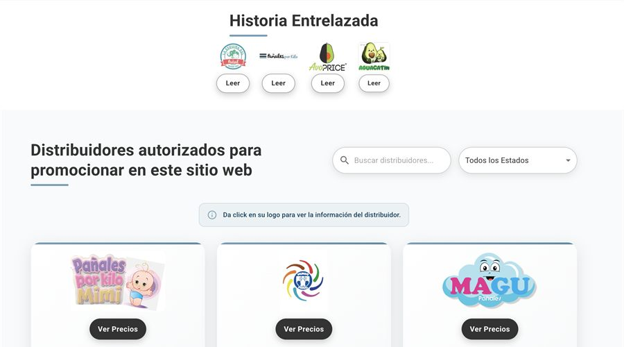

PROYECTO / 08
Aguacatin
Plataforma innovadora para conectar distribuidores de pañales, permitiendo comparar precios y ofertas en tiempo real. Facilita la distribución eficiente y el acceso a mejores oportunidades de negocio.
ReactNode.jsMongoDBExpress
